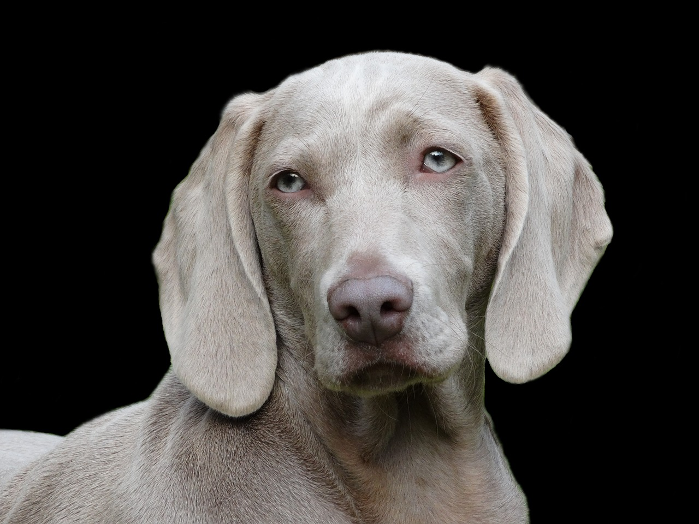
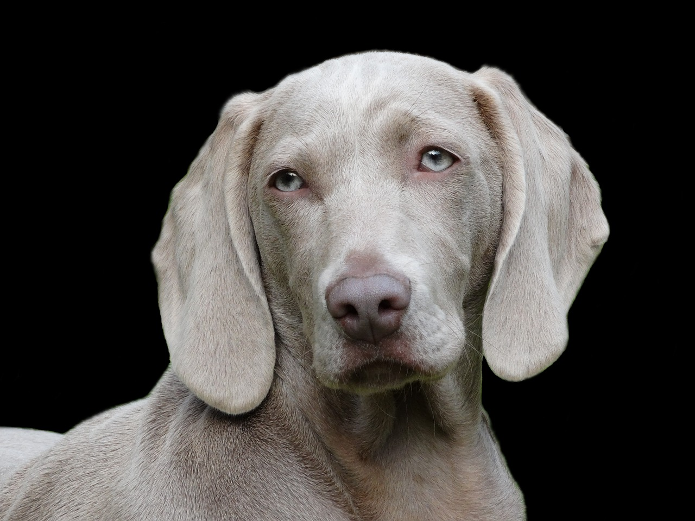

Dalmatialaisten suosio nousi huimasti Dodie Smithin julkaiseman lastenkirjan "Satayksi dalmatiankoiraa" (1956)
ja siihen perustuvien Disneyn elokuvasovitusten myötä.
Dobermanni oli alunperin paljon nykyistä ärhäkämpi koira,
sillä sen tarkoitus oli vaikuttaa mahdollisimman hurjalta ja
tarvittaessa suojellakin omistajaansa vaarallisilta veronkiertäjiltä.
Suomen beagleista iso osa on metsästyskäytössä. Metsästäessään se on sitkeä ja periksiantamaton.
Varsinkin Englannissa pienikokoinen Beagle oli hyvä jänisten metsästyksessä.


 
